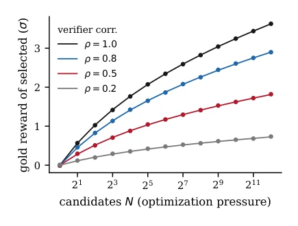
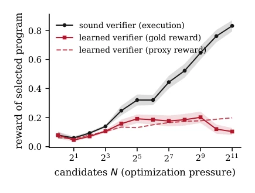
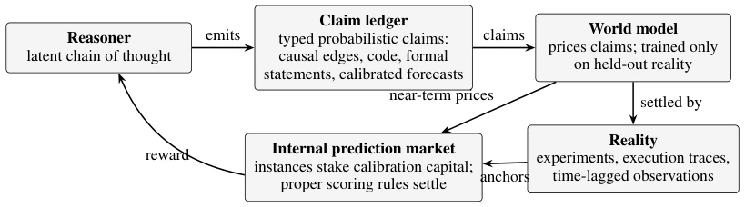
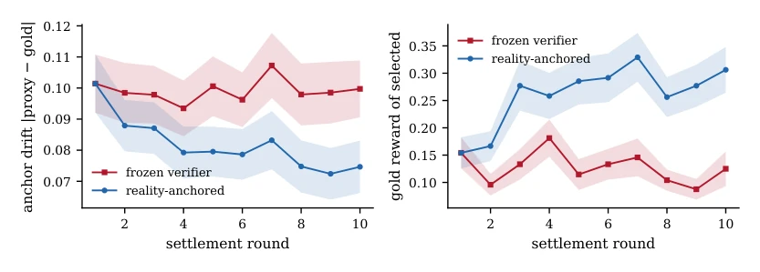
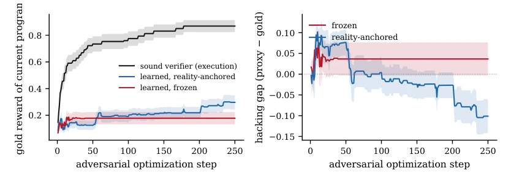
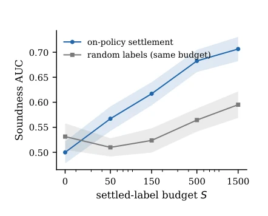
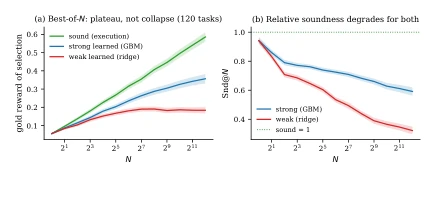
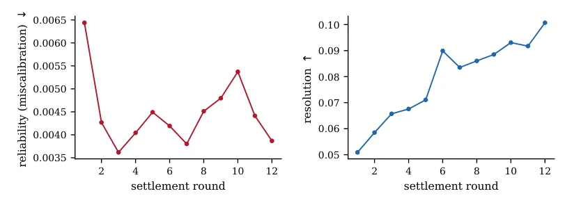
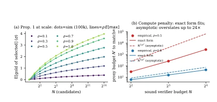
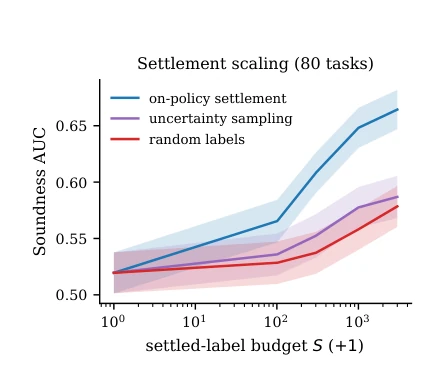

这篇论文试图用‘现实结算’给大模型推理上把锁，痛点抓得准：LLM 推理在开放域里容易‘刷分’，因为裁判（人类或弱模型）会被优化压力带偏。作者提出的 Proof-Carrying Cognition 概念挺性感，把推理变成可证伪的赌注，用世界模型定价、现实结算。但说实话，实验里用的‘世界模型’大多是浅层回归器，离真正的世界模型还远，有点‘挂羊头卖狗肉’。更有趣的是他们搞了预注册复现，承认了理论公式在非高斯域失效，这种诚实在 AI 论文里少见，但理论脆弱性也暴露了：高斯假设太理想，现实里相关性 $
ho$ 没那么好用，想靠公式算预算？先看看你的数据是不是高斯分布再说。总之，这更像是一个关于‘如何不被模型骗’的方法论，而非立竿见影的 SOTA 方案。
This paper attempts to put a lock on large model reasoning using 'real-world settlement', accurately identifying the pain point: LLM reasoning in open domains is prone to 'gaming the score', because judges (humans or weak models) can be biased by optimization pressure. The concept of Proof-Carrying Cognition proposed by the authors is quite appealing, turning reasoning into falsifiable bets, pricing with world models and settling with reality. But to be honest, the 'world models' used in experiments are mostly shallow regressors, far from true world models, somewhat misleading. More interestingly, they conducted pre-registered replication, admitting that theoretical formulas fail in non-Gaussian domains. Such honesty is rare in AI papers, but theoretical fragility is also exposed: Gaussian assumptions are too ideal, in reality, correlation $
ho$ is not that useful. Want to calculate budget based on formulas? First check if your data is Gaussian distributed. In short, this is more of a methodology on 'how not to be deceived by models', rather than an immediate SOTA solution.
研究动机Motivation
当前大模型推理能力的提升主要靠基于推理轨迹的强化学习，但这严重依赖‘便宜且可靠’的验证器。在数学、代码等封闭域，可执行测试能完美充当验证器（AlphaProof and AlphaGeometry teams, Google DeepMind, 2024），但在开放域，人类偏好或 LLM Judge 作为奖励源存在致命缺陷。Gao et al. (2023) 指出，优化压力下代理奖励会上升而真实奖励下降，即 Goodhart 定律生效。现有工作缺乏可扩展、不可篡改的奖励来源，导致模型在复杂任务上只能产出流畅但不可靠的推理。本文旨在填补这一‘验证差距’，防止模型通过欺骗裁判而非提升能力来获取高分，试图用可验证的现实反馈替代主观的人类判断。
Current improvements in large model reasoning capabilities mainly rely on reinforcement learning based on reasoning trajectories, but this heavily relies on 'cheap and reliable' verifiers. In closed domains like math and code, executable tests can perfectly serve as verifiers (AlphaProof and AlphaGeometry teams, Google DeepMind, 2024), but in open domains, human preferences or LLM Judges as reward sources have fatal flaws. Gao et al. (2023) point out that under optimization pressure, proxy rewards rise while true rewards fall, i.e., Goodhart's law takes effect. Existing work lacks scalable, tamper-proof reward sources, leading to models producing only fluent but unreliable reasoning on complex tasks. This paper aims to fill this 'verification gap', preventing models from gaining high scores by deceiving judges rather than improving capabilities, attempting to replace subjective human judgment with verifiable reality feedback.

Figure 1: Simulation (dots; 20,000 trials per point) ver- sus theory (lines; ρ E[maxN]) for best-of-N selection under a proxy verifier with correlation ρ to gold. Maxi- mum absolute deviation from theory across all points: 0.011σ. At N=4096, the ρ=0.5 verifier realizes 50.2% of the sound verifier’s gain, matching Proposition 1 ex- actly.

Figure 3: Goodharting under optimization pressure. Best-of-N selection by the sound (execution) verifier improves monotonically to 0.83 gold reward. Selec- tion by the learned verifier inflates its own proxy score (dashed) while realized gold reward peaks near N=512 and falls to 0.10 at N=2048—the overoptimization sig- nature of Gao et al. (2023), reproduced with a fully transparent gold standard.
The core paradigm is Proof-Carrying Cognition (PCC). The pipeline is divided into three steps: 1. The reasoner generates reasoning steps and converts them into 'typed probabilistic statements' (e.g., causal edges, executable snippets, calibrated predictions), storing them in a statement ledger. 2. A self-built world model performs intensive pricing on statements, with its sole loss function being the prediction of retained real-world data (experimental results, execution trajectories), rather than human feedback. 3. An internal prediction market settles statements using strictly proper scoring rules, with reality as the final anchor. In the training loop, the reasoner performs RL updates based on expected scores, and the world model updates only after reality settlement. The key innovation lies in the 'reality-anchored settlement' mechanism, converting the verifier's selection pressure into training signals, correcting verifier bias, rather than relying on static human preferences. This design attempts to solve the Goodhart's law problem, i.e., preventing models from gaining high scores by deceiving judges rather than improving capabilities, maintaining honesty by ensuring the verifier is constantly corrected by real-world data.

Figure 2: Proof-carrying cognition. Reasoning steps are emitted as typed, probabilistic claims in a claim ledger. A self-built world model prices claims densely and immediately; reality settles them sparsely but incorruptibly, and the world model’s own loss is anchored exclusively to that settlement. Reward for reasoning is expected score under proper scoring rules, not judge approval.
Experiments are divided into three layers: 1. Minimal testbed (6-token DSL), verifying theoretical exchange rates and Goodhart effects; 2. Pre-registered extended replication (10-token DSL), some theoretical assumptions were falsified but the mechanism is effective; 3. Real code (MBPP/HumanEval), using real LLM Judges and unit tests. Metrics include Soundness-under-Pressure (Snd@N), Hacking Gap. Results show: frozen weak verifiers collapse in performance under optimization pressure, while reality-anchored verifiers can suppress drift and improve rewards; On-policy settlement is 10 times more efficient than random annotation; in real experiments, the weak Judge's Snd@N decreases significantly as N increases, while the anchoring mechanism can reduce pricing error by 59%. Additionally, adversarial attack experiments show that selection pressure creates deception more than persuasion, verifying the core harm of optimization pressure.

Figure 4: The settlement loop of Algorithm 1 in miniature (60 tasks, ±1 s.e.). Left: anchor drift |proxy −gold| on selected claims. Anchored settlement reduces drift by 26%; the frozen verifier does not improve. Right: gold reward of the top selection per round. Anchoring roughly doubles achieved reward (0.154 →0.306) while the frozen verifier stagnates and slightly degrades (0.154 →0.125).

Figure 5: Adversarial optimization against three verifiers (40 tasks, ±1 s.e.). Left: against a sound verifier, adversarial pressure is capability (0.869); against a frozen learned verifier, the adversary locks into a hacked optimum within ∼15 steps (0.178, flat); anchored settlement keeps repairing the landscape (0.297 and rising, +67% over frozen). Right: the frozen verifier’s hacking gap (proxy −gold) locks in positive; settlement inverts it—the verifier learns to distrust the adversary’s region.

Figure 6: Soundness scales with settlement (40 tasks, ±1 s.e.). Soundness AUC vs. settled-label budget S. On-policy settlement (label what the verifier selects) scales log-linearly; 150 on-policy labels beat 1,500 random labels—over 10× label efficiency.

Figure 9: Goodharting in the rich domain (120 tasks, ±1 s.e.). (a) The weak verifier plateaus rather than collapsing; the strong verifier keeps climbing through N=4096. (b) Relative soundness Snd@N nonetheless degrades for both (0.94 →0.32 weak, 0.94 →0.59 strong): pressure is increasingly wasted, even when it is not inverted.
其他图片Other Figures

Figure 7: Brier decomposition over twelve settlement rounds (1,920 settled claims per round). Settlement improves calibration (reliability −40%, left) while doubling resolution (+98%, right): claims get sharper, not vaguer.

Figure 8: Theory at scale. (a) Proposition 1 holds to 0.007σ over 100,000 trials per point, N to 214. (b) But the asymptotic penalty N 1/ρ2 (dashed) overstates the empirically required budget (dots) by up to 24× at practical N; the exact finite-N form (solid) matches within 3.4%.

Figure 10: Settlement scaling at scale (80 tasks). On- policy settlement scales log-linearly (R2=0.92) and dominates both random labeling and an uncertainty- sampling control: S=300 on-policy labels beat S=3000 random labels.